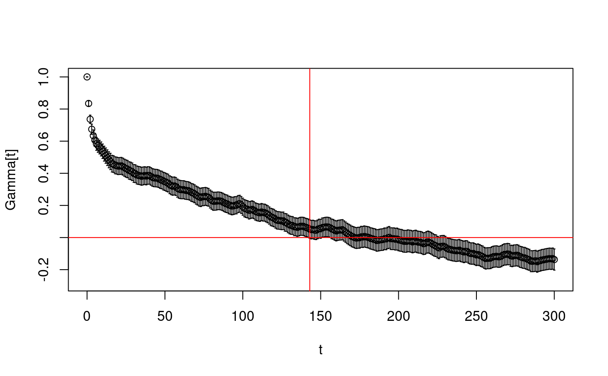

computeacf.RdComputes the ACF and integrated autocorrelation time of a time series. It also estimates the corresponding standard errors.
computeacf(tseries, W.max, Lambda=100)
| tseries | the time series. |
|---|---|
| W.max | maximal time lag to be used. |
| Lambda | cut-off needed to estimate the standard error of the ACF. |
It returns a list of class hadronacf with members
time lags of the integrated autocorrelation function
normalised autocorrelation function
error of normalised autocorrelation function
max time lag used for the call of acf
the cut-off up to which the ACF is integrated for the integrated autocorrelation time
the original time series
the estimated integrated autocorrelation time
the estimated error of the integrated autocorrelation time
The standard error of the ACF is computed using equation (E.11) of M. Luescher, hep-lat/0409106. The error of the integrated autocorrelation time using the Madras Sokal formula, see also hep-lat/0409106.
'Monte Carlo errors with less errors', Ulli Wolff, hep-lat/0306017
'Schwarz-preconditioned HMC algorithm for two-flavour lattice QCD', Martin Luescher, hep-lat/0409106
N. Madras, A. D. Sokal, J. Stat. Phys. 50 (1988) 109
uwerr, acf
bootstrap.analysis
data(plaq.sample) myacf <- computeacf(plaq.sample, 300) plot(myacf)summary(myacf)#> Analysis based on Autocorrelation function #> cut-off parameter W: 143 #> tauint: 41.10436 #> dtauint: 12.3563 #> data mean: 0.5825716 #> data error (naive): 3.044298e-06 #> data error (corrected): 2.760235e-05